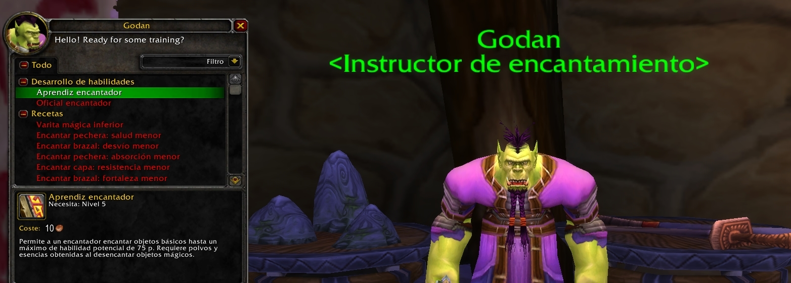
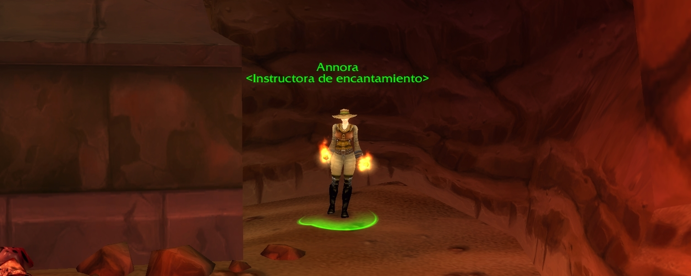

Guía de Encantamiento 1 a 300
Los encantadores desencantan los objetos mágicos que sobran y utilizan el residuo resultante para aumentar permanentemente el equipo de su elección. Con los encantamientos y materiales adecuados, un encantador puede añadir bonus a sus armaduras o armas y hacerlas más fuertes, rápidas o resistentes (entre una gran variedad de otros poderes místicos). Los encantadores astutos venden sus servicios especiales a otros héroes y suelen imponer unos precios desorbitados debido a la peculiaridad del trabajo que realizan.
Los encantadores necesitan el residuo de los objetos mágicos para trabajar: cuanto más potente sea el objeto, más peculiar será el residuo. También necesitan varas encantadoras para canalizar su magia.
Encantamiento no depende de una profesión de recolección en concreto, así que, a veces, los encantadores eligen sastrería para crear rápidamente objetos mágicos que destinan a desencantar.

Como sucede con cualquier profesión, nuestra primera parada debe ser junto al instructor de encantamiento (Orgrimmar, Ventormenta...) para que nos enseñe esta profesión primaria y el desarrollo de habilidad "Aprendiz encantador" que nos permitirá ponernos manos a la obra con esta profesión.
La presente guía la dividiremos en dos partes. La primera se centrará en detallaros los materiales necesarios para subir la profesión y la segunda, el método para llegar a los 300 puntos con encantamiento.

Encantamiento 1-75
Una vez hemos aprendido el rango "Aprendiz encantador" procederemos a realizar los siguientes encantamientos para subir la profesión a 75 puntos de habilidad.
- Vara rúnica de cobre: hasta llegar a los 2 puntos de habilidad (1 unidad creada).
- Encantar brazales: salud menor: hasta llegar a los 75 puntos de habilidad (76 unidades creadas aproximadamente).
Encantamiento 75-150
Llegados a este punto, acudiremos de nuevo junto a nuestro instructor de profesión para aprender la habilidad "oficial encantador". A continuación, tendremos la ocasión de continuar subiendo nuestra profesión de encantamiento.
- Encantar brazal: desvío menor: hasta llegar a los 85 puntos de habilidad (10 unidades creadas).
- Encantar brazales: aguante menor: hasta llegar a los 100 puntos de habilidad (15 unidades creadas).
- Vara rúnica de plata: hasta llegar a los 101 puntos de habilidad (1 unidad creada).
- Encantar brazales: aguante menor: hasta llegar a los 105 puntos de habilidad (4 unidades creadas).
- Encantar brazales: agilidad menor: hasta llegar a los 120 puntos de habilidad (18 unidades creadas aproximadamente).
- Encantar escudo: aguante menor: hasta llegar a los 130 puntos de habilidad (10 unidades creadas).
- Encantar brazales: aguante inferior: hasta llegar a los 150 puntos de habilidad (20 unidades creadas).
A continuación, para continuar nuestra subida de profesión, acudiremos junto a Kitta Vientofuego en la Torre de Azora (Bosque de Elwynn) si pertenecemos a la Alianza o junto a Hgarth en el Refugio Roca del Sol (Sierra Espolón) si nuestra facción es la Horda. Allí aprenderemos la habilidad "experto encantador" para poder seguir subiendo nuestra profesión.
Encantamiento 150-225
Continuaremos con encantamientos realizando las siguientes recetas:
- Vara rúnica de oro: hasta llegar a los 151 puntos de habilidad (1 unidad creada).
- Encantar brazales: aguante inferior: hasta llegar a los 160 puntos de habilidad (9 unidades creadas aproximadamente).
- Encantar escudo: aguante inferior: hasta llegar a los 165 puntos de habilidad (5 unidades creadas).
- Encantar brazales: espíritu: hasta llegar a los 180 puntos de habilidad (15 unidades creadas).
- Encantar brazales: fuerza: hasta llegar a los 200 puntos de habilidad (20 unidades creadas).
- Vara rúnica de veraplata: hasta llegar a los 201 puntos de habilidad (1 unidad creada).
- Encantar brazales: fuerza: hasta llegar a los 205 puntos de habilidad (7 unidades creadas aproximadamente).
- Encantar capa: defensa superior: hasta llegar a los 225 puntos de habilidad (20 unidades creadas).
Conseguidos los 225 puntos de habilidad en encantamiento, nos dirigiremos hasta Uldaman para encontrarnos con Annora y aprender la habilidad "encantador artesano".

Encantamiento 225-300
Antes de empezar con las siguientes recetas y tras aprender la habilidad "encantador artesano" con Annora, os recomendamos conseguir las siguientes recetas que necesitaremos en algunos de los pasos que citaremos un poco más tarde:
- Fórmula: encantar escudo: aguante superior:
- Alianza: acudiremos junto a Mythrin'dir en el Bancal del Arsano (Darnassus).
- Horda: acudiremos junto a Daniel Bartlett en la parte central de Entrañas.
- Fórmula: vara rúnica de arcanita y Fórmula: encantar capa: defensa excelente: acudiremos junto a Lorelae Cantinvernal en Claro de la Luna (Amparo de la Noche) para comprar dichas recetas.
Una vez conseguidas las tres recetas anteriores, es el momento de continuar y finalizar con nuestra profesión de encantamientos:
- Encantar guantes: agilidad: hasta llegar a los 235 puntos de habilidad (10 unidades creadas).
- Encantar pechera: salud excelente: hasta llegar a los 245 puntos de habilidad (12 unidades creadas aproximadamente).
- Encantar brazales: fuerza superior: hasta llegar a los 265 puntos de habilidad (26 unidades creadas aproximadamente).
- Encantar escudo: aguante superior: hasta llegar a los 290 puntos de habilidad (30 unidades creadas aproximadamente).
- Vara rúnica de arcanita: hasta llegar a los 291 puntos de habilidad (1 unidad creada).
- Encantar capa: defensa excelente: hasta llegar a los 300 puntos de habilidad (9 unidades creadas).